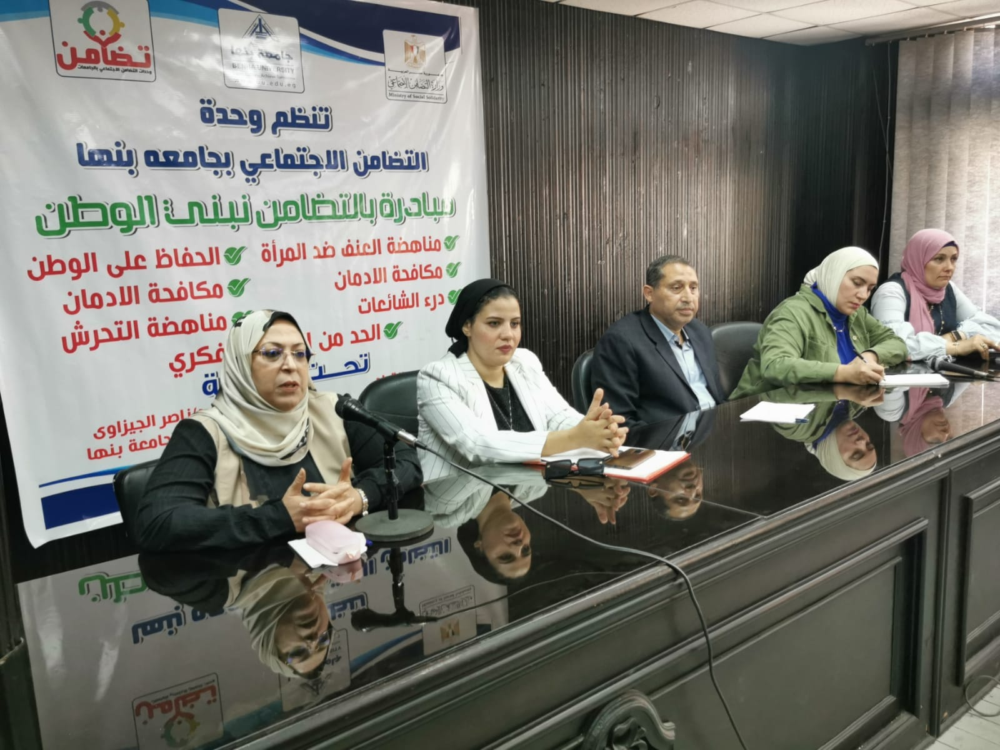
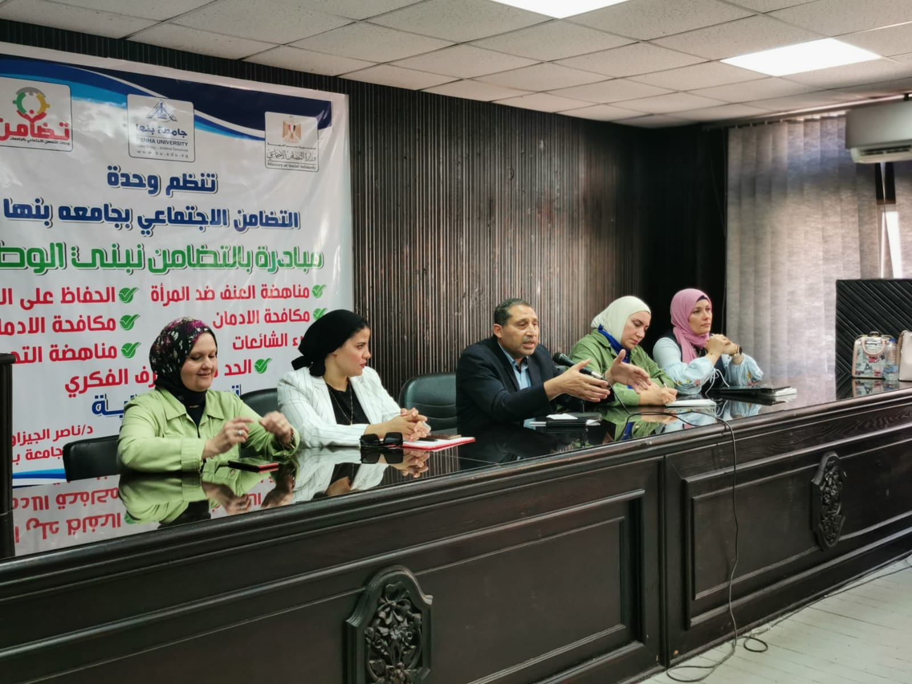

تعتبر ظاهرة العنف ضد المرأة من أكبر وأهم المشكلات التى تواجهها المرأة في المجتمع العربي، وعلى الرغم من التقدم التكنولوجى وتغير العديد من نمط الحياة والعادات والتقاليد لكن لم تستطع هذه الأشياء محو هذه الظاهرة، لذلك تظل متواجده في مجتمعنا بشكل أو بأخر. وعلى غرار ذلك. اقامت كلية الاداب جامعة بنها بعض الندوات والحملات للرفع الوعي تجاه قضايا العنف ضد المرأه ومنها (العنف الاسري-التحرش-العنف الجسدي-والعنف الجنسي) ومن أهم هذة الندوات "يوم المرأه المصرية، والتنمر الإلكتروني ضد المرأه وكيفية مواجهته" وحاضر في هذه الندوات نخبة من اساتذه وأعضاء هيئة التدريس بالكلية وفيما يلي نعرض اهم النقاط التي تناولتها هذه الندوات ورؤية الجامعة والكلية في دعم هذه القضية
تحدثت دكتور نجلاء عبد الجواد رئيس قسم التاريخ بكلية الاداب جامعة بنها عن هذه القضية قائلة "تتعدد اشكال العنف ضد المرأة فمنها العنف الجسدي، العاطفي، الجنسي، والنفسي. وقد اهتمت كلية الاداب بهذه القضية بشكل كبير وذلك في اطارعدة ندوات والتي تناولت كل من "العوامل الاجتماعية والثقافية التي تساهم في انتشار العنف ضد المرأة - الآثار النفسية والاجتماعية للعنف على المرأة والمجتمع- دور التشريعات والقوانين في مكافحة العنف ضد المرأة وحماية الضحايا- خدمات الدعم والمساعدة المتاحة للضحايا وكيفية الوصول إليها- التوعية والتثقيف بشأن حقوق المرأة والمساواة الجندرية كوسيلة للوقاية من العنف- دور وسائل الإعلام في تشكيل الوعي العام حول مشكلة العنف ضد المرأة والمساهمة في تغيير الثقافة والسلوكيات الضارة- الخطوات العملية التي يمكن اتخاذها على المستوى الفردي والمجتمعي والحكومي للحد من العنف ضد المرأة والعمل نحو مجتمع آمن ومتساوي للجميع" وقد حاضر في هذه الندوات خبراء من تخصصات الكلية المختلفة كما حضر واستفاد منها العديد من الطلاب الكلية مما ساهم في رفع وعيهم بالقضية.
ندوات جامعة بنها
كما اضافت دكتور امل الخطاب أستاذ الصحافة بقسم الاعلام بالكلية ان كل تلك الندوات والحملات تم اجراءها العام الماضي تحت مظلة رئيس الجامعة وتحت اشراف وكالة البيئة وخدمة المجتمع وتحت رعاية وزارة التضامن الإجتماعي. وجاء اغلبها كندوات تهدف للنشر الوعي وكيفية حماية المرأه من العنف الذي تتعرض له سواء كان (العنف الاجتماعي - او العنف الإقتصادي - او الجسدي- او المادي) أو أي شكل من اشكال العنف، حيث هدفت تلك الندوات لرفع الوعي لدي الطلاب ورفع وعي منسوبي الجامعة لنشر ثقافة مناهضة العنف ضد المرأه وهذا يعد مجهودا كبيرا من المجهودات الي تتبانها الكلية والدولة برعاية فخامة الرئيس عبد الفتاح السيسي، وكان هذا التوجيهه واضح منذ عام 2019 عندما تم الاعلان انه عاما للمرأه المصرية ومنذ ذلك الحين بدأت تظهر تشريعات جديدة وفاعليات كثيرة وكيفية عمل تمكين للمرأه سواء كان هذا التمكين "اقتصادي – او سياسي" برفع نسبة حصولها علي الوظائف القيادية في كل مؤسسات الدولة سواء كانت هذه المؤسسات تعلمية او مؤسسات خدمية او ثقافية بلإضافة الي سن عدد من التشريعات والقوانين المشرعة التي كانت موجودة في الوقت السابق للتدعيم عملية العنف ومناهضة التحرش ضد المرأه والفتيات وغيرها من مشاكل التي كانت تتعرض لها المرأة المصرية في الوقت السابق.
وقد اكد دكتور عربي الطوخي رئيس قسم الاعلام بالكلية ووكيل الكلية لشؤون المجتمع وتنمية البيئة والمشرف العام على هذه الندوات العام الماضي في اطار عمله وكيلا للكلية على ان الكلية تنهض دائما بالمرأه وتشكيل ندوات ووحدات قادمة للمناهضة العنف ضد المرأه وهذة الوحدة سوف تستمر عملها علي مدار الأعوام القادمة الخاصه بالندوات والمؤتمرات وورش العمل للمكافحة العنف ضد المرأه.
وحدة مناهضة العنف ضد المراة
كما اوضحت دكتور كريمة الحصري استاذ علم الإجتماع بالكلية والمسؤولة عن تلك الندوات ان كلية الاداب سبق وشكلت لجنة تسمي لجنة "دعم المرأه " لتمنية الأسرة المصرية وكانت هذة اللجنة تحت ادارتي وشارك فيها مجموعة من الاعضاء في مقدمتهم عميد الكلية دكتور أمجد حجازي ووكيلة الكلية دكتور شرين الشورى ومدير اللجنه . كما توجد وحدة باسم "مناهضة العنف ضد المرأه" بالجامعة وتعد هذه الوحدة اكبر وحدة الأنها تضم جميع فروع الكليات الاخري تقوم الكلية علي ارسال حملات في بعض القري الخاصة بمحافظة القليوبية وكانت كل قرية تحمل موضوع معين عن سابقيها وتتفق جميعها حول موضوع العنف ضد المرأه، وقد تم البدء بفاعليات جديدة ومنها ما اقيمت يوم الثلاثاء الموافق 19/3/2024 تسمي لجنة "دعم المرأه وتنمية الاسرة المصرية " وكانت هناك ايضا حملة "مودة" تابعة للرئاسة الجمهورية ومازالت مستمرة للحفاظ علي كيان الأسرة المصرية أنشأتها رئاسة الجمهورية للنشرها في كافه انحاء الجامعات المصرية للرفع الوعي وكيفية الحفاظ علي كيان الاسرة المصرية. تم إنشاء حفل تكريم للمرأه الفترة الماضية وشارك فيها عضوية مجلس الشعب.
كما تشكلت وحدة لمساندة المرأه علي مستوي الجامعة وتم تشكيل هذة اللجنه من اعضاء الجامعة والهدف من هذة الوحدة انشاء ندوات ومؤتمرات بجانب الدورات وهذه الوحدة سوف يستمر عملها علي مدار الاعوام القادمة للتوعية المرأه والفتيات وتقوم الجامعة علي عمل بحوث للنهوض بشخيصة المرأه، حيث يأتي دور الجامعة في مكافحة ظاهرة العنف ضد المرأة في اطار عدة جوانب منها: التوعية والتثقيف: تقديم برامج توعيه وتثقيفية للطلاب والموظفين حول أشكال العنف ضد المرأة وآثارها السلبية على المجتمع، بالإضافة إلى تعزيز الوعي بأهمية المساواة بين الجنسين واحترام حقوق المرأة. البحث العلمي: تشجيع البحث العلمي والدراسات الأكاديمية حول موضوع العنف ضد المرأة لفهم أسبابه وعوامله المؤثرة وتطوير السياسات والبرامج التي تساهم في الحد من هذه الظاهرة., دعم الضحايا وتوفير خدمات الدعم والمساعدة للطلاب والموظفين الذين يعانون من التعرض للعنف الجنسي أو العاطفي، بما في ذلك تقديم المشورة والدعم النفسي وتوجيههم إلى الموارد والخدمات المتاحة في المجتمع. وإعداد الكوادر الواعية وتوفير برامج تدريبية وورش عمل للطلاب والموظفين حول كيفية التعامل مع حالات العنف ضد المرأة بفعالية، بما في ذلك كيفية التعرف على علامات العنف والتدخل السريع والمناسب. واكدت الحصري على دعم الجامعة والكلية للمبادرات النسوية ووتشجيع المبادرات الطلابية والمجتمعية التي تهدف إلى مكافحة العنف ضد المرأة وتعزيز حقوقها، سواء كان ذلك من خلال تنظيم الفعاليات والندوات أو دعم الحملات التوعوية. تطبيق السياسات الجامعية: وضع سياسات وإجراءات داخل الجامعة تهدف إلى منع العنف ضد المرأة وحماية الضحايا، بما في ذلك سياسات مكافحة التحرش الجنسي وإجراءات للتعامل مع الشكاوى بشأن حالات العنف. باختصار، يمكن للجامعات أن تلعب دوراً هاماً في توعية المجتمع والعمل على إيجاد بيئة آمنة ومشجعة للمرأة والتصدي لظاهرة العنف ضدها. وتعتمد الخطط المستقبلية لمكافحة العنف ضد المرأة على عدة عوامل، بما في ذلك التطورات الاجتماعية والثقافية والسياسية. التشريعات وتطبيقها: تعزيز التشريعات التي تحمي حقوق المرأة وتجرم العنف ضدها، بالإضافة إلى تطبيقها بشكل فعال لضمان تحقيق العدالة والحماية للضحايا. الوعي والتثقيف: تعزيز الوعي بمخاطر العنف ضد المرأة وتثقيف المجتمع حول أهمية المساواة بين الجنسين واحترام حقوق المرأة، وذلك من خلال حملات توعية وبرامج تثقيفية في المدارس والجامعات ووسائل الإعلام والمجتمع المدني. تعزيز الدعم الاجتماعي والنفسي: توفير خدمات الدعم النفسي والاجتماعي للضحايا وتطوير برامج لتعزيز الصمود والتأهيل للناجيات من العنف.دعم المبادرات المجتمعية: تشجيع ودعم المبادرات المجتمعية التي تهدف إلى مكافحة العنف ضد المرأة وتعزيز حقوقها، مثل تأسيس مراكز للمساعدة والدعم وتوفير التدريب والتثقيف.تمكين المرأة اقتصادياً واجتماعياً: تعزيز فرص العمل والتعليم للمرأة، وتشجيع مشاركتها في اتخاذ القرار وتمكينها اقتصادياً.
الحاضر والمستقبل
كما صرحت دكتور شيرين الشورى وكيلة الكلية الشؤن تنمية المجتمع والبيئة بانه سيتم عقد ندوات جديدة الفترة القادمة بعنوان هي تقود او لهن بصمات وتختص هذه الندوة امهات أطفال ذوي الهمم لأن معظم هذة النساء تتعرض للعنف من الراجل ف تحمل على عاتقها مسؤلية اولادها بمفردها لدعم المراة والتركيز على تشجعيها في مواجهة ضغوط المجتمع.
- لقاءات مع المصادر
- مصدر الصور لقاءات مع المصادر
- مصدر الصور صفحة قسم الاعلام على الفيس بوك